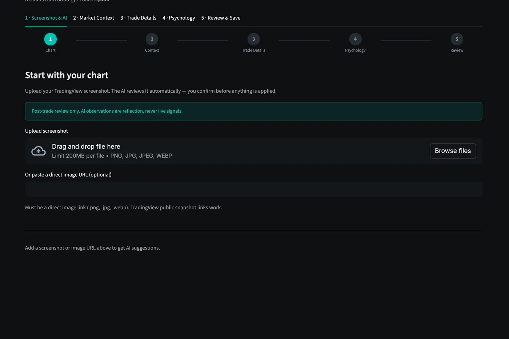

Review the trade
Upload the TradingView screenshot while the trade is fresh. The AI reads the chart and pre-fills what it can see, then you confirm every field before anything is saved.
- Screenshot-first entry with AI-suggested fields
- Psychology, emotion, and mistake tagging
- Nothing is stored until you confirm it
